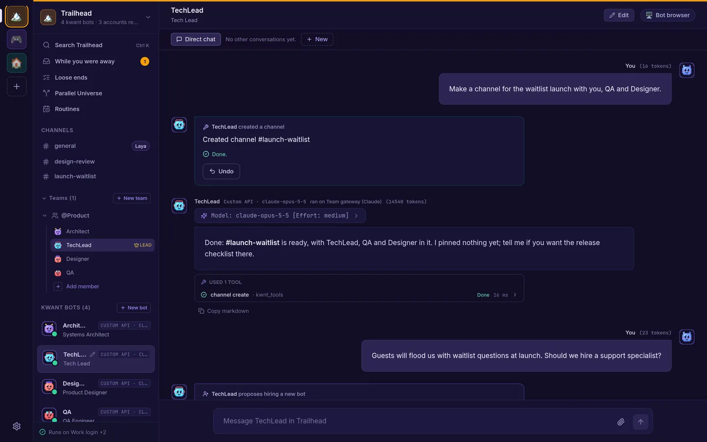
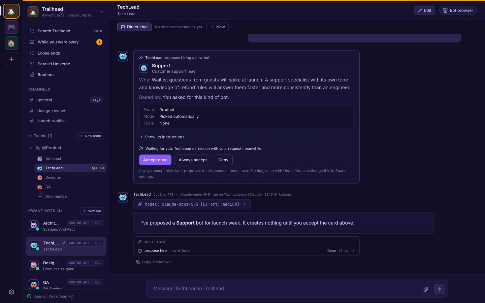
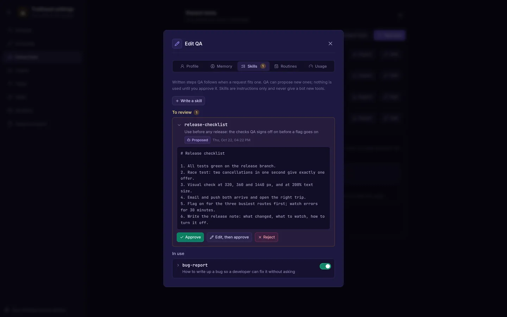
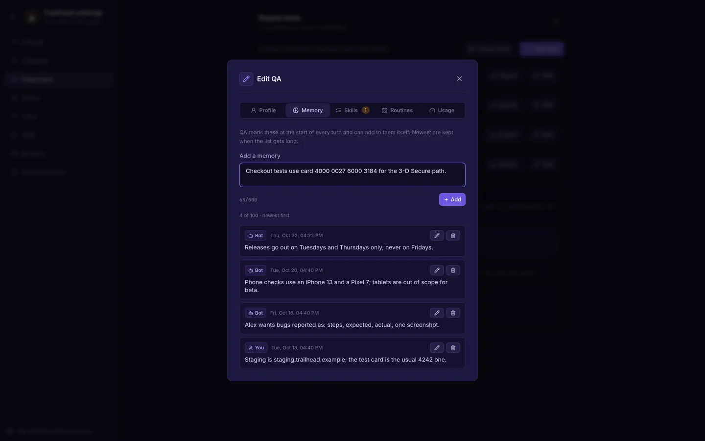
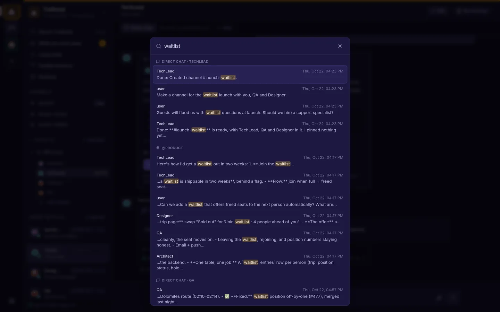
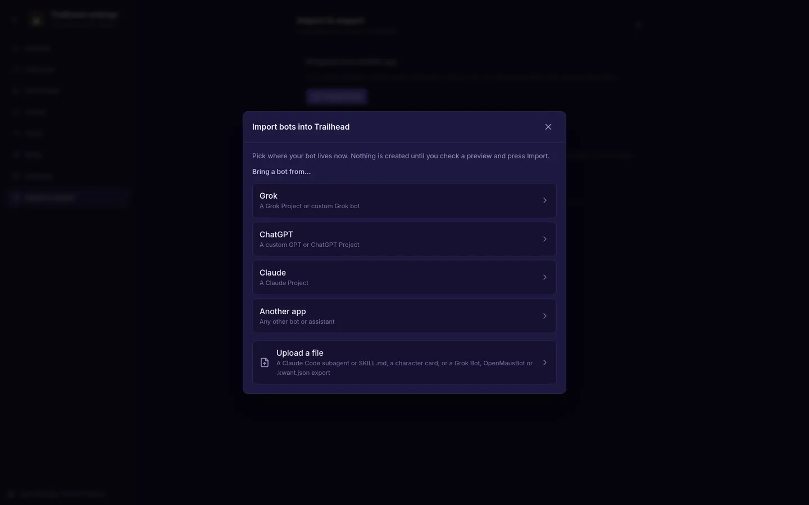
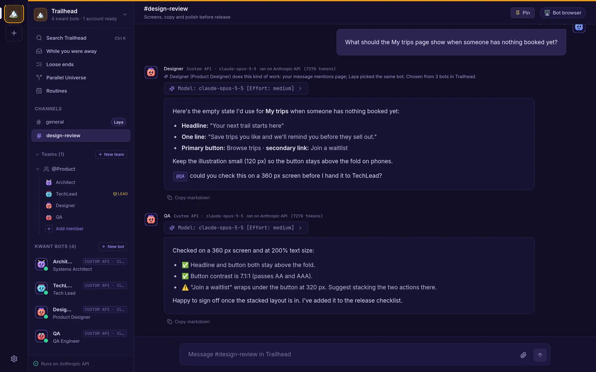
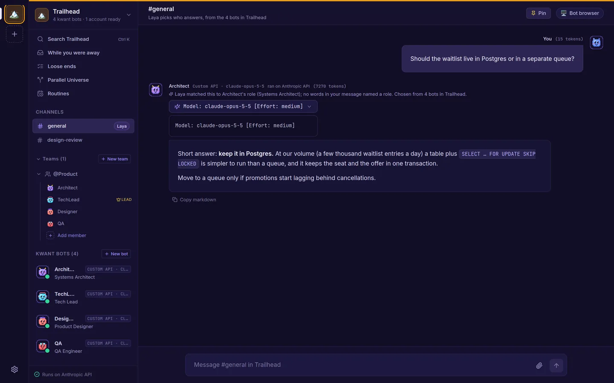
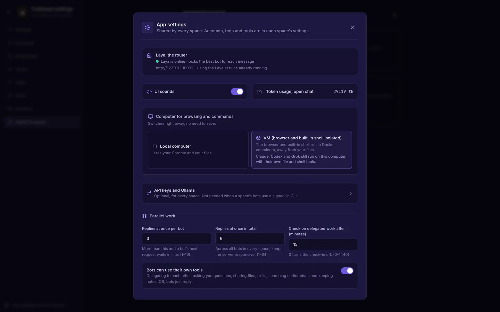

Changes with an Undo
Bots create routines, channels and bots when you ask, up to 10 changes a turn. Deleting a bot or archiving a space waits for your OK.
Self-hosted · one binary · your data
kwant gives you a team of bots that share chats, hand work to each other with an @mention, keep working on a schedule and wait for your OK before anything risky. Keep separate spaces for work and home, each with its own bots and accounts. Run it on your laptop or a server, with the Claude, Codex or Grok CLI you already use, or your own API keys.
git clone https://github.com/alexsergivan/kwant.git && cd kwant && make run
What makes kwant different
kwant runs a whole working setup on your own machine: separate spaces, every account you have, and bots that keep going when you close the tab.
Separate spaces for work, a side project and home. Each has its own bots, teams, channels, routines, accounts and approval rules.
See spaces →Two Claude logins, a ChatGPT plan, an API key and your own server, side by side. When one runs out, kwant moves the turn to the next.
See accounts →Bots @mention each other, a lead runs short discussions and posts one summary, and the Laya router picks who answers and with which model.
See the team →Routines on a schedule, bots that check back on their own, and one page with what finished, what failed and what's waiting on you.
See routines →Finds what you started and never finished in your chats, email and GitHub, and reads the letters you photograph. It drafts the reply. It never sends.
See loose ends →Ask for a routine or a channel and the bot makes it, with an Undo button. Bots can even propose hiring a teammate. You decide.
See bot actions →Spaces & accounts
One kwant, as many spaces as you need. Nothing leaks from one to the next: not the bots, not the chats, not the accounts.
Give each space a name, an icon and a colour. Its bots, teams, channels, tool servers, skills and routines stay inside it.
Ctrl/⌘ + 1–9. Each space reopens where you left itAdd as many accounts per engine as you have: Claude or Codex or Grok CLI logins, Anthropic, OpenAI or xAI keys, and your own server that speaks the OpenAI or Anthropic API.
Your team
Each bot has its own role, voice and model. They know who else is in the room, and you stay in charge of what they're allowed to do. These screens come from a sample space called Trailhead with a four-bot product team.
Ask a team a question that needs several views and the lead takes it from there. It opens with a short take, or asks you first if something's unclear. Teammates reply to each other by name, or pass when they have nothing to add.
When a bot wants to run a command, edit a file outside its folder or call a tool like GitHub, you see exactly what it will do, arguments and all.
Start from a ready-made persona: Tech roles like Security, QA or SRE, non-tech ones like Research, Legal or Support, or lifestyle helpers like Travel Planner and Chef. Or start blank.
Works while you're away
Routines run on a schedule, bots check back on their own, and kwant keeps track of everything that's still open.
Ask a bot to check something every morning and it sets up the routine itself, with an Undo button on the card. Or make one yourself: once, daily, weekly, monthly, every few minutes or hours, or a cron rule.
"While you were away" collects what happened since you last looked, instead of a wall of chat.
Loose ends reads your kwant chats and, if you add them, an email inbox over IMAP and your GitHub issues and pull requests. It finds what's still hanging: a question nobody answered, a promise that lapsed, a reply you owe.
Photograph or upload a bill, form or notice, up to five pages. kwant pulls out who sent it, what they want, the deadline, references and amounts, each next to the line it came from, and drafts a reply.
Parallel Universe
Managed hosting, a VPS or serverless? Describe your app and up to three ways to run it. kwant runs each one in a sealed-off container on your own server, load-tests it, and sets it next to a price estimate from a dated price table.
And more
They set things up when you ask, remember what matters, and learn your way of working, with you approving each step.

Bots create routines, channels and bots when you ask, up to 10 changes a turn. Deleting a bot or archiving a space waits for your OK.

When a specialist would do better, a bot can propose a new teammate. Accept it once, always, or deny it. Each space sets its own rule.

A bot can write down how it does a task as a skill. Nothing is used until you approve it, edit it or turn it off.

Each bot keeps up to 100 short memories. You see every one, who wrote it, and can edit or delete it.

Press Ctrl K or ⌘K to search every channel and direct chat in a space.

Import bots from Grok, ChatGPT, Claude or a file. They arrive with no tools and no keys, and their skills and routines wait for you.

Mention a teammate, or @everyone, and they pick it up right after, up to four handoffs per message.

The Laya router picks who answers in a channel, and the model and effort for bots set to auto. If it's offline, kwant routes by keyword.

Bots browse and run commands on your computer, or in Docker containers kept away from your files.
Anywhere
The web app works on a phone, so you can read the team's summary or approve an action while you're away from your desk.
The basics
No cloud service to sign up for. kwant runs where you put it and keeps everything in one folder.
kwnt is a single program with the web app and an SQLite database built in. No Node.js at runtime and no database server to set up.
On your own computer there's nothing to sign in to. On a server, open the link it prints at startup once. Docker Compose and a systemd unit are included.
Use the claude, codex or grok CLI, Anthropic, OpenAI or xAI API keys, or any OpenAI-compatible server like OpenRouter or LM Studio.
Give bots GitHub, Notion or any other MCP server. Paste a command or URL from its README, then pick which bots can use it.
Commands and edits outside a bot's own folder wait for Allow once, Always allow or Deny. Or let kwant ask only when something looks risky.
Chats, bots and settings live in kwant's data folder on your machine. Saved website logins can live in your own Bitwarden.
How it works
You need Rust and Node.js 20+ to build. The finished binary needs neither.
git clone https://github.com/alexsergivan/kwant.git
cd kwant
make runUse the Sign in with Claude button, a signed-in codex or grok CLI, or add an API key under Space settings → Accounts.
Open http://127.0.0.1:8799. Architect, TechLead and DevOps are already in #general. Ask them something, or create your own team.
FAQ
No. Any one account is enough: the claude CLI (kwant has a Sign in with Claude button), the codex or grok CLI signed in on the same machine, or an Anthropic, OpenAI or xAI API key.
In kwant's data folder, ~/.kwnt by default, or wherever KWNT_DATA_DIR points. Chats, bots and settings are in an SQLite database there. The models themselves run wherever your chosen CLI or API runs them.
Only within the limits you set. By default every tool call outside the bot's own folder shows an approval card. You can switch a space or a single bot to "Ask only when risky" or "Don't ask". In any mode, calls that name kwant's own secret files are refused.
Yes. Copy the binary to a VPS and run kwnt serve --host 0.0.0.0, or use the included Docker Compose file. Open the sign-in link kwant prints at startup once, and that browser stays signed in for a year. Put an HTTPS reverse proxy in front of it.
Only for VM mode, which runs the bots' shared browser and kwant's built-in shell in containers. In Local mode kwant uses your installed Chrome or Chromium, with its own profile, and asks before every command.
A small routing model (convaiinnovations/laya) that picks which bot answers in a channel, and which model and effort a bot set to auto uses. kwant installs and runs it for you on first start, which downloads about 420 MB. Skip it with --no-laya, and kwant routes by keyword.
Yes, through MCP servers. Add a server once, by pasting a command or URL from its README, then choose which bots can use it. A bot only ever sees the servers you gave it. Servers that need a sign-in use OAuth.
A separate area with its own bots, teams, channels, routines, skills, tool servers and accounts. Use one for work and another for home, and switch with Ctrl/⌘ + a number. Each space has its own approval and hiring rules.
Yes. Add as many accounts per engine as you like: CLI logins, API keys, or your own OpenAI- or Anthropic-compatible server. Set a default and an order, and pin a bot to one account if you want.
If nothing has been shown yet in that turn, kwant moves it to the next account in your order, up to three tries, and says so in the chat. The account that ran out is skipped until it resets. You can turn this off for a bot.
No. Loose ends reads your inbox and GitHub without changing anything, and letters are read from photos you upload. kwant drafts the reply, and you copy it or open it in your mail app.
No. It runs each option in a sealed-off Docker container on your own server and estimates prices from a dated table built into kwant. It needs Docker, and runs one comparison at a time.
Yes, when you ask: routines, channels, bots and more, up to 10 changes a turn, each on a card with Undo. Deleting a bot or archiving a space waits for your OK. Bots can't touch keys, sign-ins, approval rules or computer mode.
Yes. kwant gives you a prompt to paste into the other app, and you paste its reply back, or upload a file such as a Claude Code subagent or a SKILL.md. Imported bots start with no tools and no keys, and their skills and routines wait for you.
Clone it, run make run and ask your first question in a few minutes.